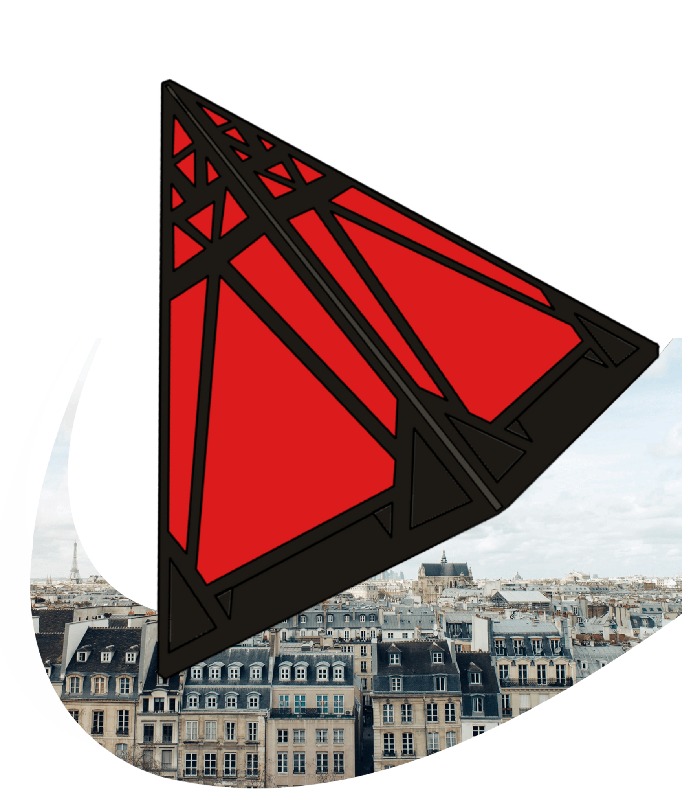

Mon experience
Développeur Web
Web Design



Après avoir pris la décision de me spécialiser en informatique, j'ai
commencé à m'entraîner en autodidacte sur les fondamentaux de la
programmation, notamment en C et en assembleur. Cet apprentissage
m'a permis de développer une compréhension approfondie des bases de
l'informatique et de la logique algorithmique. Grâce à ces
connaissances, j'ai pu aborder la programmation web de manière plus
complète et efficace. Par la suite, j'ai effectué un stage chez
Vinovae en développement web, ce qui m'a confirmé mon intérêt et mon
envie de poursuivre dans cette voie. Fort de cette expérience, j'ai
intégré une école spécialisée pour approfondir mes compétences en
développement.